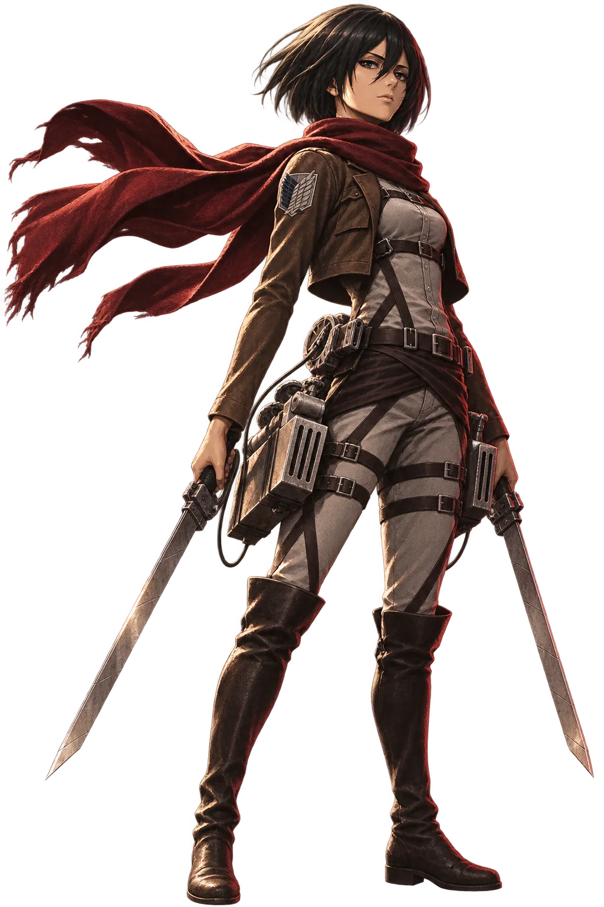
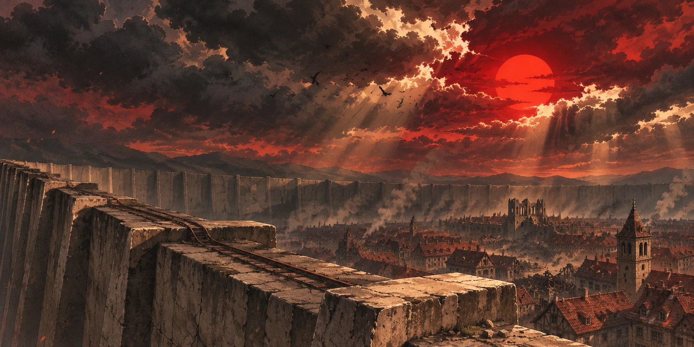
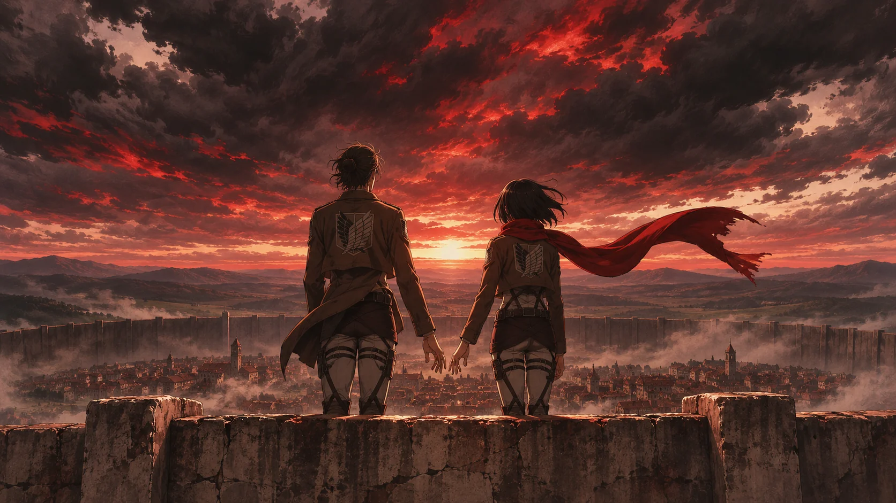
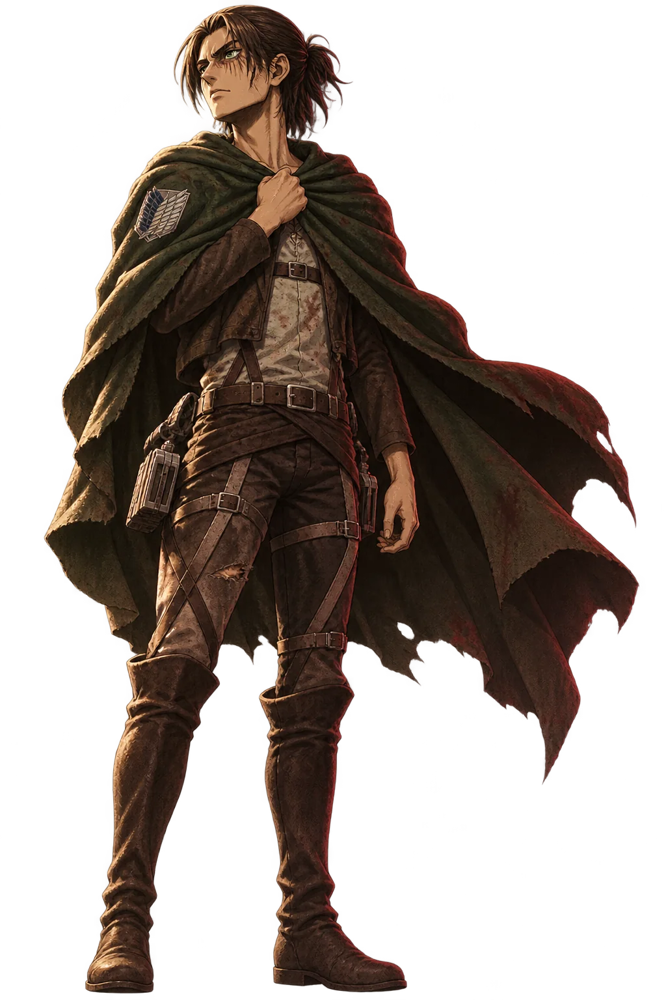
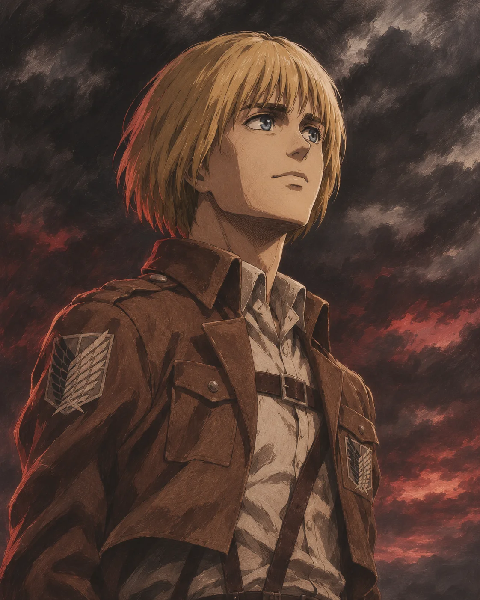
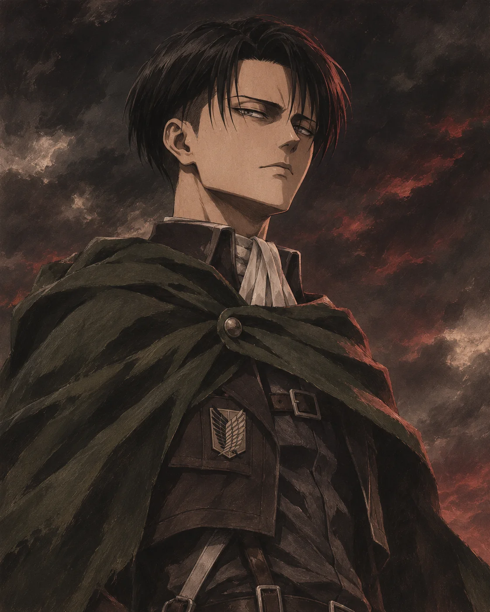
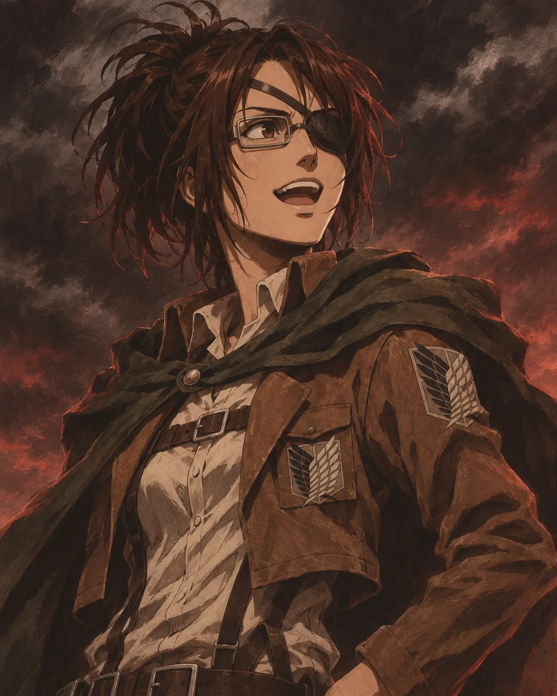

МИКАСА АККЕРМАН
Она защищает близких с редкой решимостью. За её силой — желание сохранить тепло, которое однажды вернуло ей чувство дома.
ВИЗУАЛЬНАЯ ИСТОРИЯ / 01—04
ДВА ЧЕЛОВЕКА · ОДИН МИР
История Эрена и Микасы — о свободе, верности и любви, которая остаётся, когда рушится всё остальное.
ВОЙТИ В ИСТОРИЮ ↘О ВСЕЛЕННОЙ «АТАКИ ТИТАНОВ»
Люди поколениями жили за огромными стенами, спасаясь от титанов. Эрен мечтал узнать, что скрывается снаружи. Микаса хотела сохранить тех, кого называла семьёй.
Постепенно борьба за выживание превращается в историю о цене свободы, памяти и выбора — своего и чужого.
ИСТОРИЯ МЕЖДУ НИМИ ↗
ЗА ПРЕДЕЛАМИ ИЗВЕСТНОГО / 850WALL
КРАСНЫЙ ШАРФ / ПЕРВАЯ ПАМЯТЬ
Красный шарф стал для Микасы символом тепла и принятия. Её чувство к Эрену проходит через годы, сражения и решения, которые невозможно принять без боли.
Их история не даёт простого ответа. Здесь есть близость и расстояние, верность и право каждого сделать собственный выбор.
В ЦЕНТРЕ ИСТОРИИ

Она защищает близких с редкой решимостью. За её силой — желание сохранить тепло, которое однажды вернуло ей чувство дома.

Он стремится выйти за пределы стен. Чем ближе свобода, тем сложнее становится путь и тем больше он ставит на карту.

Друг детства и голос надежды.

Сила и дисциплина.

Любопытство, меняющее взгляд на титанов.
ЭРЕН × МИКАСА / ВИДЕОИСТОРИЯ
Нажмите, чтобы посмотреть ролик со звуком. Воспроизведение начинается только по вашему выбору.
КОГДА СЛОВ УЖЕ НЕДОСТАТОЧНО
Их связь живёт в коротких мгновениях: в заботе, во взгляде, в шарфе, который хранит память о доме.
НАЧАТЬ СНАЧАЛА ↑